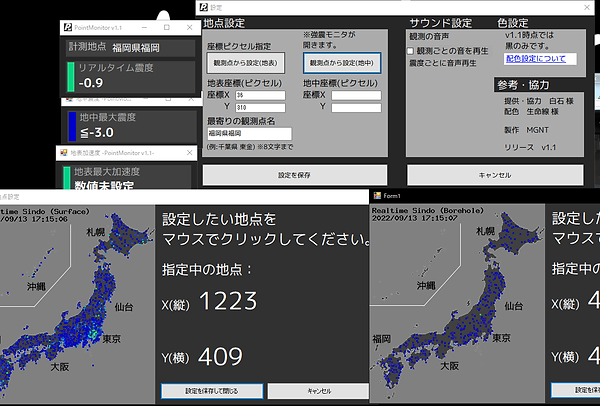
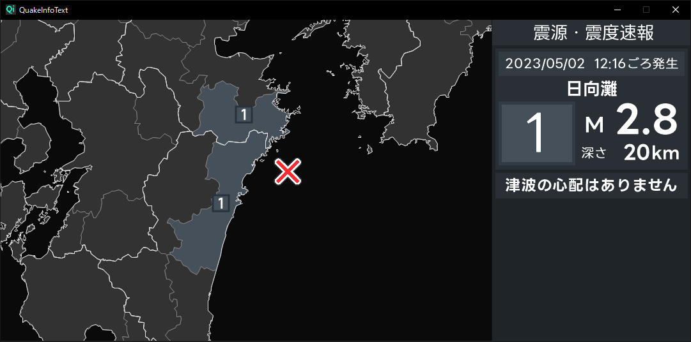
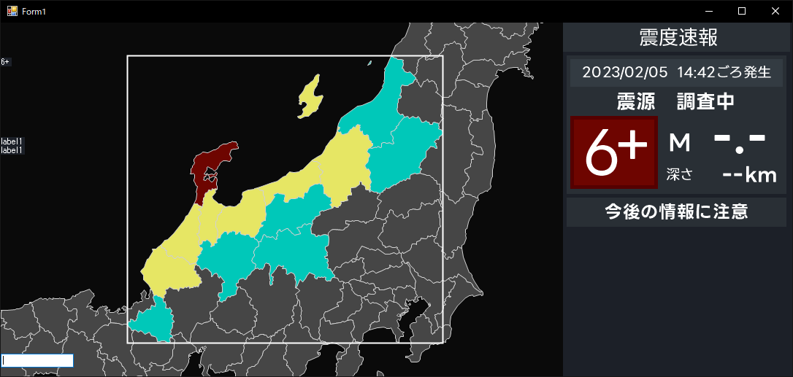

MGNTのﾌﾟﾛｸﾞﾗﾐﾝｸﾞ歴史
この記事ではMGNTがアプリ制作をするまでの経緯やQITについて書かせて
いただきます。
自己紹介
FukuokaMGNTCamです。福岡県で地震観測をしています。是非見に来てください。
制作に興味を持ったきっかけ
本格的にアプリ制作をしようと思い始めたのは2022年の7月中旬頃です。それまは有志が制作してくれたアプリを愛用していました。
きっかけを持ったのはKyoshinEEWViewer for ingenというアプリケーションの観測ﾗﾝｷﾝｸﾞ機能でした。ほかにもEqwatch等にも実装されていますが、数十件を一度に見ることができるのはスゴイと思いました。ほかにも理由はありましたが、恐らくこれが一番の理由だと思います。
でも自分はまだプログラミングのプの字も知らないほど無知でした。この機能がなければただ有志制作のソフトウェアを使用して配信するだけの人だったかもしれません。
ﾌﾟﾛｸﾞﾗﾐﾝｸﾞに興味を持ったきっかけ
プログラミング自体に興味を持ったのは別の理由で、まずMGNTは英語がまったくできません。でも英語は学びたいけど勉強は嫌だという理由だったかもしれません。
最初のソフト

初めて作ったソフト、PointMonitorは画像からリアルタイム震度を出す -生命線様-のコードを参考にしながら制作しました。
当時はKyoshinLibの使い方がわからなかったのでこの方法で取得して出来て喜んでました。
何故ゆえにデザインがひどい。(当時美術部)結局デザインがひどいまま開発は終了してしまいました。
PiDAS
8月の終わり、夏休みの課題として自由研究をすべくPiDAS(5000円で)の購入。
ですがまさかの半田付けが必要だということが判明。もちろん私は半田付けなんてしたこともないし、調べてみたときこれは絶対買うべきではなかったと後悔していました。
ですが3か月後、学校の授業で半田付けをする機会が出来そのタイミングで半田付けを極めました。
11月くらい、半田付けが終わり、ソフトウェアをラズパイにぶち込んでみます。
あれ？これPythonじゃん。私触ったことないんだけど...
MGNT君は困ってしまいます。こうなったら電子書籍を買うしかないと買います。
というかingen様が公開されているPiDASPlus入れればいいだけだったのに、600円払ったというわけです。
でも社会貢献的なのになったからいいのかな...?
QuakeInfoText
当初マップに興味はあっても難しいため文字だけの情報ソフトを作ろうと考えていました。
その3か月後、やはりマップを用いて表示しないと伝わりずらいと配信にテスト使用してみて気づきました。
QuakeInfoText-Mapを考える-
最初は画像を用いて表示しようと考えました。
ですが描画に時間が掛かるという致命的な問題に直面します。
そこでMGNTはこう考えます。「GeoJson使って描画したほうがいいよな...」と。
もちろん描画経験もない私。C# WinFormsで地図描画という記事を繰り返し見てもまったくわかりませんでした。(僕の理解力が乏しいだけで記事は全く悪くありません。)
そのためにまずデザイン(UI)を固めて行こうということになります。
QuakeInfoText-UIを固めていく-
2023/05/02、大幅なUIを変更してみました。省スペースかつ見やすくなるよう調整しました。津波情報も大々的に表示させるようにし、一目で分かるような配置にしました。また、津波予報以上の情報が発表された際には文字色を薄黄色になるようにしました。

QuakeInfoText-自動移動-
2023/05/27、マップの自動移動に成功しました。当時はまだズームの機能は実装していないので、手動ズームですが...
震度1以上の地域に枠を囲ませ、その中心の緯度経度を求めることで出来ました。

強震モニタの開発
06/04、描画方法を理解して、いよいよ開発に着手しました。
もちろん分かったからと言って直ぐに描画出来たというわけではありません。
観測点ファイルから名前を抜き出して、KyoshinMonitorLibを使用して
緯度経度・震度・RGBを取得することで実現に至りました。
そこからforeach文で繰り返し情報を読み込み、かつ同時に描画まで
行うことで画像の通りになりました。(動作困難を予想し九州のみの描画)
市区町村ごとの描画
06/22、使用しているAPI付属の観測点情報をまとめたファイルを見つけ、
強モニ観測点を描画した感じで取得し、黒点のみで描画してみました。(画像無し)
さらに震度を追加し、重なり方(震度が大きいほど手前に表示)を無視していますが
描画に成功しました。
さらにそこから6時間を犠牲にしたことで、
ソート(順番)して描画することに成功しました。
(隠れていた震度5弱が一番手前に表示)
最大震度地域の表示
区分名ならまだしも、市区町村となると分かりずらいとなりそうなので、描画しました。
またマップ上にも最大震度の地域を描画しました。(強モニ描画で知識取得済)
(※テキストとマップの情報は違うものです。)